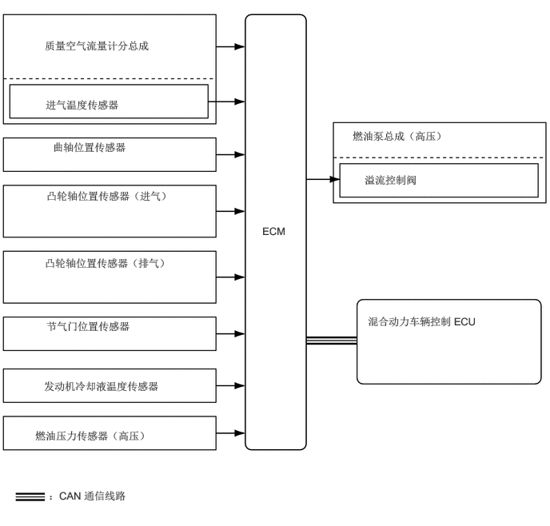

3.417,2.927 3.792,3.188
0.365,0.25
10
false
ECM
0.583,0.51 2.844,0.781
2.25,0.26
10
false
质量空气流量计分总成
0.594,1.281 2.542,1.531
1.938,0.24
10
false
进气温度传感器
0.688,1.833 2.198,2.073
1.5,0.229
10
false
曲轴位置传感器
0.604,2.469 2.26,2.885
1.646,0.406
10
false
凸轮轴位置传感器（进气）
0.583,3.344 2.24,3.76
1.646,0.406
10
false
凸轮轴位置传感器（排气）
0.604,4.167 2.135,4.469
1.521,0.292
10
false
节气门位置传感器
0.573,4.948 2.833,5.229
2.25,0.271
10
false
发动机冷却液温度传感器
0.458,5.594 3.01,5.865
2.542,0.26
10
false
燃油压力传感器（高压）
0.635,6.375 2.375,6.625
1.729,0.24
10
false
：CAN 通信线路
4.594,1.688 7.167,1.969
2.563,0.271
10
false
燃油泵总成（高压）
4.75,2.26 5.938,2.51
1.177,0.24
10
false
溢流控制阀
4.792,4.104 6.531,4.521
1.729,0.406
10
false
混合动力车辆控制 ECU